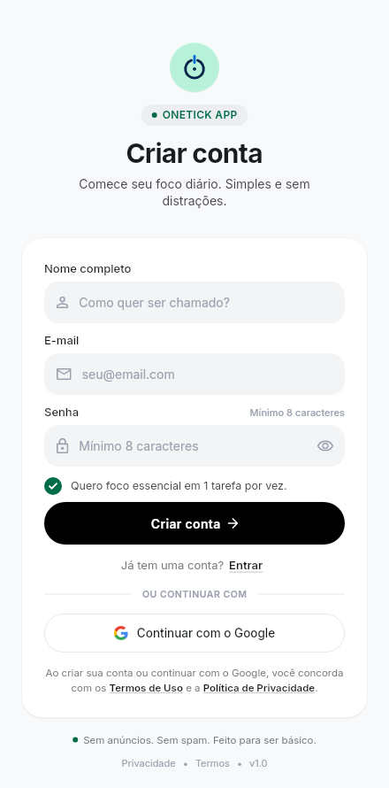
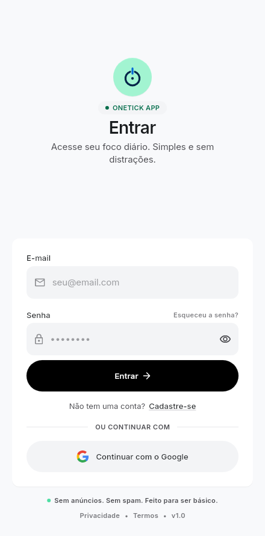
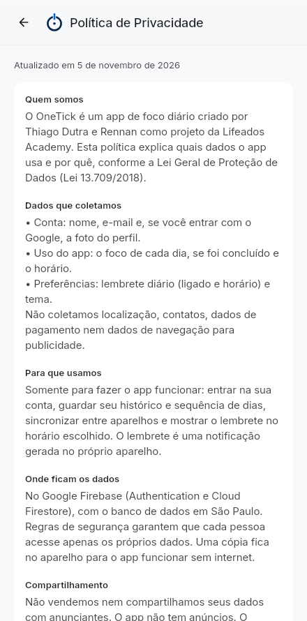
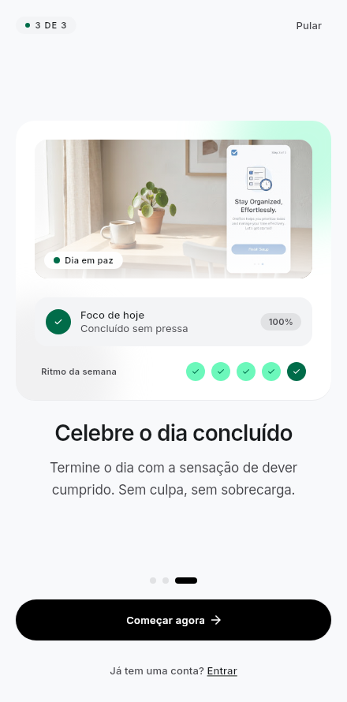

DESAFIO FINAL · LIFEADOS ACADEMY
OneTick
Guia do projeto: o que é, como a arquitetura funciona, o código de cada camada e as dificuldades que resolvemos.
Guia do projeto: o que é, como a arquitetura funciona, o código de cada camada e as dificuldades que resolvemos.
Listas de tarefas crescem até virar fonte de ansiedade. O OneTick faz o contrário: a pessoa escolhe uma única prioridade por dia, toca para concluir e acompanha a constância no histórico.







| Ferramenta | Para que serve no OneTick |
|---|---|
| Flutter / Dart | Um código só para Android e iOS, com desempenho nativo. |
| flutter_bloc (Cubit) | Gerência de estado: cada tela tem um Cubit que emite estados (carregando, erro, vazio, sucesso). |
| get_it | Injeção de dependência: monta as peças de cada tela e permite trocar o Firebase por versões falsas nos testes. |
| Firebase Auth | Login por e-mail/senha e Google, recuperação de senha, exclusão de conta. |
| Cloud Firestore | Banco na nuvem (São Paulo) com cache offline; cada usuário só acessa os próprios dados. |
| flutter_local_notifications | Lembrete diário agendado no próprio aparelho, com o ícone do OneTick. |
| flutter_test, bloc_test, mocktail | 136 testes: regras, repositórios, telas, fluxo completo e prints (goldens). |
O código é dividido em camadas com uma regra só: as dependências apontam para dentro. A tela conhece o Cubit, o Cubit conhece o caso de uso, e o caso de uso conhece apenas um contrato (interface). Quem fala com o Firebase fica na borda e pode ser trocado sem mexer na regra de negócio.
Seguir uma ação real é a melhor forma de entender as camadas. Este é o caminho do toque no círculo da tela Hoje até o Firestore:
Nas próximas páginas está o código de cada passo, na ordem.
Um objeto imutável com o dia (dateKey no formato 2026-11-05), o texto e se foi concluído. Não sabe nada de banco ou de tela.
/// The single commitment a user picks for one calendar day. class FocusEntity extends Equatable { const FocusEntity({ required this.dateKey, required this.title, this.completed = false, this.completedAt, }); final String dateKey; // yyyy-MM-dd: um documento por dia final String title; final bool completed; final DateTime? completedAt; static const int maxTitleLength = 60; }
Uma interface: diz o que precisa existir, não como. O domínio depende disso, nunca do Firebase.
abstract interface class FocusRepository {
Future<FocusEntity?> getToday();
Future<FocusEntity> saveToday(String title);
Future<FocusEntity> completeToday();
Future<FocusEntity> uncompleteToday();
Future<List<FocusEntity>> entriesBetween(DateTime start, DateTime end);
}
Cada ação do app vira uma classe pequena com um método call(). Fica fácil de achar, testar e reaproveitar.
class CompleteTodayFocusUseCase { const CompleteTodayFocusUseCase(this._repository); final FocusRepository _repository; // o contrato, não o Firebase Future<FocusEntity> call() => _repository.completeToday(); }
Aqui mora a regra: não dá para concluir sem foco, e concluir duas vezes não muda o horário. Repare que o relógio (_now) é injetado: nos testes usamos uma data fixa.
class FocusRepositoryImpl implements FocusRepository { const FocusRepositoryImpl(this._adapter, this._now); final FocusRemoteAdapter _adapter; // Firestore ou memória final DateTime Function() _now; // relógio injetável @override Future<FocusEntity> completeToday() async { final key = DateUtilsX.keyOf(_now()); final existing = await _adapter.getByKey(key); if (existing == null) { throw const AppFailure('Defina um foco antes de concluir.'); } if (existing.completed) return existing.toEntity(); // idempotente final model = FocusModel( dateKey: key, title: existing.title, completed: true, completedAt: _now(), ); await _adapter.upsert(model); return model.toEntity(); } }
O Firestore trabalha com mapas (JSON). O model converte entidade ⇄ mapa, para o domínio nunca depender do formato do banco.
factory FocusModel.fromMap(Map<String, dynamic> map) => FocusModel( dateKey: map['dateKey'] as String, title: (map['title'] as String?) ?? '', completed: (map['completed'] as bool?) ?? false, completedAt: map['completedAt'] as DateTime?, ); FocusEntity toEntity() => FocusEntity(dateKey: dateKey, title: title, completed: completed, completedAt: completedAt);
Cada usuário tem uma pasta users/{uid}/focus com um documento por dia. O _commit resolve um problema real: offline, o Firestore só termina a escrita quando o servidor responde. Sem o timeout, a tela ficaria travada.
/// Stores one document per day at `users/{uid}/focus/{yyyy-MM-dd}`. CollectionReference<Map<String, dynamic>> get _collection => _db.collection('users').doc(_uid()).collection('focus'); @override Future<void> upsert(FocusModel model) { return _guard(() async { final map = model.toMap(); final at = model.completedAt; map['completedAt'] = at == null ? null : Timestamp.fromDate(at); await _commit(_collection.doc(model.dateKey).set(map)); }); } /// Offline, Firestore applies the write to the local cache at once but only /// completes the future after the server acknowledges it. Waiting forever /// would freeze the UI, so after a short wait the write is treated as queued. Future<void> _commit(Future<void> write) async { try { await write.timeout(_offline ? _offlineWait : _serverWait); } on TimeoutException { _markOffline(); // fica no cache e sincroniza quando a rede voltar } }
O Cubit recebe a ação, chama o caso de uso e emite um novo estado. Enquanto conclui, emite isCompleting: true (o botão mostra o carregando); se der erro, volta ao estado anterior com um aviso.
Future<void> complete() async { final current = state; if (current is! TodayPending || current.isCompleting) return; emit(TodayPending(focus: current.focus, streak: current.streak, isCompleting: true)); try { final done = await _complete(); // o caso de uso final streak = await _getStreak(); if (!isClosed) emit(TodayCompleted(focus: done, streak: streak)); } on AppFailure catch (e) { if (!isClosed) { emit(TodayPending(focus: current.focus, streak: current.streak, notice: e.message)); } } }
sealed class obriga a tela a tratar todos os cenários; se esquecermos um, o código nem compila.
sealed class TodayState extends Equatable { ... } class TodayLoading extends TodayState { ... } class TodayEmpty extends TodayState { ... } // sem foco hoje class TodayError extends TodayState { ... } class TodayPending extends TodayState { ... } // definido, não concluído class TodayCompleted extends TodayState { ... }
A page cria o Cubit e escolhe a view. Cada view só sabe desenhar o seu caso.
return switch (state) { TodayLoading() => const TodayLoadingView(), TodayError(:final message) => TodayErrorView(message: message, onRetry: cubit.load), TodayEmpty(:final streak) => TodayEmptyView(today: today, streak: streak, ...), TodayPending() => TodayView(focus: state.focus, onComplete: cubit.complete, ...), TodayCompleted() => TodayCompletedView(focus: state.focus, onUndo: cubit.undoCompletion, ...), };
O get_it monta a "árvore" adapter → repositório → casos de uso → Cubit. Cada setup verifica isRegistered: assim os testes registram versões falsas antes e o app usa a falsa no lugar do Firebase.
void setupTodayDependencies() { setupFocusAdapterDependencies(); // Firestore ou memória if (!getIt.isRegistered<FocusRepository>()) { getIt.registerLazySingleton<FocusRepository>( () => FocusRepositoryImpl(getIt<FocusRemoteAdapter>(), getIt<AppClock>().now), ); } if (!getIt.isRegistered<TodayCubit>()) { getIt.registerFactory(() => TodayCubit( getIt<GetTodayFocusUseCase>(), getIt<CompleteTodayFocusUseCase>(), getIt<UncompleteTodayFocusUseCase>(), getIt<GetStreakUseCase>(), getIt<AppClock>(), )); } }
O SessionCubit escuta o Firebase Auth. Logado → abas do app; deslogado → onboarding/login. Sair ou excluir a conta volta ao início sozinho.
BlocBuilder<SessionCubit, SessionState>( builder: (context, state) => switch (state) { SessionUnknown() => const Scaffold(body: LoadingStateView()), SessionUnauthenticated() => const AuthFlow(), SessionAuthenticated(:final user) => ShellPage(key: ValueKey('shell_${user.id}')), }, )
Mesmo que alguém altere o app, o servidor só deixa cada pessoa ler e escrever a própria pasta.
match /users/{uid}/{document=**} {
allow read, write: if request.auth != null && request.auth.uid == uid;
}
Graças aos contratos, o teste usa o adapter em memória e uma data fixa: roda em milissegundos, sem internet.
setUp(() {
adapter = InMemoryFocusAdapter();
repository = FocusRepositoryImpl(adapter, () => now);
});
test('completeToday is idempotent', () async {
await repository.saveToday('Meditar');
final first = await repository.completeToday();
now = testNow.add(const Duration(hours: 2));
final second = await repository.completeToday();
expect(second.completedAt, first.completedAt); // não muda o horário
});
| Tipo de teste | O que garante |
|---|---|
| Domínio (sequência, validações, histórico) | As regras de negócio calculam certo. |
| Repositórios | Salvar, concluir, desfazer e buscar por período. |
| Fluxo completo | Cadastro → foco → concluir → histórico → configurações → sair / excluir conta. |
| Telas pequenas | Nenhum overflow em celular pequeno, fonte grande ou teclado aberto. |
| Goldens (prints) | As 11 telas continuam idênticas ao aprovado; qualquer pixel diferente falha. |
O domínio só conhece o contrato ReminderScheduler; quem agenda de verdade é o adapter de notificações. Ligar o lembrete pede permissão; se negar, o switch não fica "mentindo" ligado.
Future<bool> call(AppSettings settings) async { if (!settings.reminderEnabled) { await _scheduler.cancel(); return true; } if (!await _scheduler.requestPermission()) return false; await _scheduler.scheduleDaily( hour: settings.reminderHour, minute: settings.reminderMinute); return true; }
Exigência da Google Play e da Apple. O Firebase só exclui a conta com login recente, então verificamos isso antes de apagar qualquer dado.
Future<void> call() async { // Checked first so a refused deletion never leaves the account empty. await _auth.ensureCanDeleteAccount(); await _settings.clearHistory(); await _settings.deletePreferences(); await _auth.deleteAccount(); }
Se o app fica aberto à meia-noite, um timer recarrega a tela; ao voltar do segundo plano num novo dia, também.
void _scheduleMidnight() { _midnight?.cancel(); final now = _clock.now(); final next = DateTime(now.year, now.month, now.day + 1); _midnight = Timer(next.difference(now) + const Duration(seconds: 1), refreshIfNewDay); }
O que se repetia virou componente: HeaderBar (topo translúcido), BackTitleBar, AuthHeader, AuthCard, AppCard, PrimaryPillButton, showNotice, showDangerConfirm. Cores e textos vêm de AppColors e AppTextStyles — por isso o tema escuro troca o app inteiro.
| Problema | Causa | Solução |
|---|---|---|
| Telas sem detalhe do Figma | O plano gratuito do Figma bloqueou a leitura de um frame. | Conferimos direto no Stitch e comparamos as 10 telas lado a lado com os prints dos testes. |
| Design com números inconsistentes | O mock mostrava 100% sem concluir e um histórico que não batia. | Tudo calculado a partir dos dados reais; decisões registradas. |
| Login com Google falhando no emulador | Emulador sem Play Store, sem conta Google e com Play Services antigo. | Emulador com Play Store, conta adicionada, SHA-1 cadastrado no Firebase e mensagem de erro clara. |
| Tela travando sem internet | O Firestore só conclui a escrita com resposta do servidor. | Timeout: a escrita fica na fila do cache e sincroniza depois. |
| Leituras offline demorando ~10 s | O Firestore espera o servidor antes de usar o cache. | Após 3 s vai ao cache e "lembra" que está offline por 30 s. |
| Lembrete chegando até 1 h atrasado | Alarme inexato do Android. | Horário exato quando o aparelho permite; inexato como reserva. |
| Tela Hoje mostrando ontem | A data era calculada uma vez só. | Timer à meia-noite e checagem ao voltar do segundo plano. |
| Excluir conta poderia apagar dados e falhar | Firebase exige login recente para excluir. | Verificação antes de apagar qualquer dado. |
| Overflow em telas pequenas | Teclado aberto e fonte grande. | Rolagem ancorada e testes de regressão em vários tamanhos. |
| Tempo | Quem | O que falar / mostrar |
|---|---|---|
| 0:00–1:00 | Rennan | O problema (listas infinitas) e a ideia do OneTick. Abrir o Stitch e mostrar o fluxo das telas. |
| 1:00–2:30 | Rennan | Decisões de design: um foco por dia, linguagem calma, paleta navy/menta, por que sem notificações invasivas. |
| 2:30–5:00 | Thiago | Demo no celular: cadastro (Termos visíveis), definir foco, concluir, desfazer, Histórico, Configurações (tema escuro, lembrete). |
| 5:00–7:30 | Thiago | Arquitetura: diagrama de camadas e a ação "Concluir" de ponta a ponta (seção 2 e 3 deste guia). |
| 7:30–9:00 | Thiago | Firebase: login, regras de segurança, offline. Mostrar o console com os dados chegando. |
| 9:00–10:00 | Os dois | Dificuldades (seção 6), testes (136) e próximos passos. |
users/{uid} quando o uid é o do usuário logado. O bloqueio é no servidor.